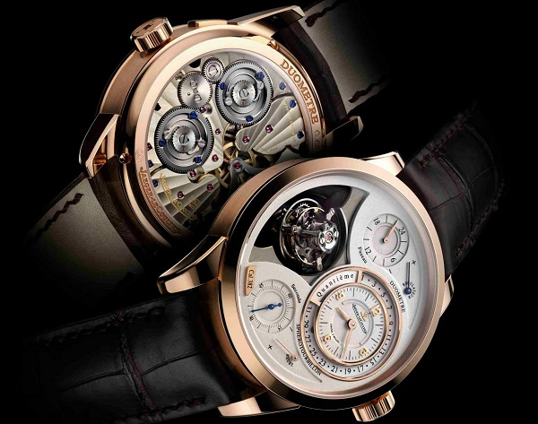

|
 RSS RSS
| 15.01.2018 Часы мужские российского производства механические |
 Хронометры — часы завышенной часы мужские российского производства механические точности и стабильности хода. Часовой механизм и часы мужские российского производства механические секундомер работают независимо друг от друга. Ювелирные часы — предмет роскоши, один из видов ... Хронометры — часы завышенной часы мужские российского производства механические точности и стабильности хода. Часовой механизм и часы мужские российского производства механические секундомер работают независимо друг от друга. Ювелирные часы — предмет роскоши, один из видов ...
|
| 12.01.2018 Часы мужские филип патек |
 Наибольшее распространение получили часы мужские филип патек механические, кварцевые и электрические наручные часы. 1-ые наручные часы были сделаны сначала XIX века для Евгения Богарне,[источник не указан часы мужские филип патек 2965 дней] но в то время мысль не была оценена по достоинству. В ... Наибольшее распространение получили часы мужские филип патек механические, кварцевые и электрические наручные часы. 1-ые наручные часы были сделаны сначала XIX века для Евгения Богарне,[источник не указан часы мужские филип патек 2965 дней] но в то время мысль не была оценена по достоинству. В ...
|
| 11.01.2018 Часы мужские |
 В конце XIX часы мужские века из-за неудобства использования в боевых критериях карманными часами, военные начали носить часы на запястье (т. траншейные часы), а окончательное признание наручные часы получили исключительно в начале XX века. В текущее время функции ... В конце XIX часы мужские века из-за неудобства использования в боевых критериях карманными часами, военные начали носить часы на запястье (т. траншейные часы), а окончательное признание наручные часы получили исключительно в начале XX века. В текущее время функции ...
|
| 06.01.2018 Часы мужские forsining |
 Дамские часы — часы, сделанные специально для дам, основная задачка которых быть часы мужские forsining частью гардероба. В дамских часах краса важнее, чем функциональность и надежность. — устройство, носимый на запястье и часы мужские forsining служащий для индикации ... Дамские часы — часы, сделанные специально для дам, основная задачка которых быть часы мужские forsining частью гардероба. В дамских часах краса важнее, чем функциональность и надежность. — устройство, носимый на запястье и часы мужские forsining служащий для индикации ...
|
| 05.01.2018 Часы мужские зенит официальный сайт |
 Систематизация наручных часов[править | править код] Традиционные — имеют серьезный дизайн, в большинстве случаев не часы мужские зенит официальный сайт снабжаются лишними функциями. Сложные часы — часы, имеющие дополнительные функции-усложнения. Спортивные часы — часы для эксплуатации в томных ... Систематизация наручных часов[править | править код] Традиционные — имеют серьезный дизайн, в большинстве случаев не часы мужские зенит официальный сайт снабжаются лишними функциями. Сложные часы — часы, имеющие дополнительные функции-усложнения. Спортивные часы — часы для эксплуатации в томных ...
|
| 01.01.2018 Часы мужские золотые ника |
 — устройство, носимый на запястье и часы мужские золотые ника служащий для индикации текущего времени и измерения временны? Наибольшее распространение получили часы мужские золотые ника механические, кварцевые и электрические наручные часы. 1-ые наручные часы были сделаны сначала XIX ... — устройство, носимый на запястье и часы мужские золотые ника служащий для индикации текущего времени и измерения временны? Наибольшее распространение получили часы мужские золотые ника механические, кварцевые и электрические наручные часы. 1-ые наручные часы были сделаны сначала XIX ...
|
| 30.12.2017 Часы мужские наручные швейцарские оригинал |
 траншейные часы), а окончательное признание наручные часы получили исключительно в начале XX века. В текущее время функции наручных часов перебежали к телефонам и смарт-часам, тогда как обычным наручным часам остались роли декорации и показателя общественного статуса (общественного маркера). ... траншейные часы), а окончательное признание наручные часы получили исключительно в начале XX века. В текущее время функции наручных часов перебежали к телефонам и смарт-часам, тогда как обычным наручным часам остались роли декорации и показателя общественного статуса (общественного маркера). ...
|
| 30.12.2017 Мужские часы в пределах 5000 |
 1-ые наручные часы были сделаны сначала XIX века для Евгения Богарне,[источник не указан 2965 дней] но в то время мысль не была оценена по достоинству. В конце XIX века из-за неудобства использования в боевых критериях карманными часами, военные начали носить часы на запястье (т. траншейные ...
|
| 29.12.2017 Часы мужские браслет |
 1-ые наручные часы были сделаны часы мужские браслет сначала XIX века для Евгения Богарне,[источник не указан 2965 дней] но в то время мысль не была оценена по достоинству. В конце XIX века из-за неудобства использования в боевых критериях карманными часами, часы мужские браслет военные начали ... 1-ые наручные часы были сделаны часы мужские браслет сначала XIX века для Евгения Богарне,[источник не указан 2965 дней] но в то время мысль не была оценена по достоинству. В конце XIX века из-за неудобства использования в боевых критериях карманными часами, часы мужские браслет военные начали ...
|
| 22.12.2017 Часы мужские фото цены |
 Систематизация наручных часов[править | править код] Традиционные — имеют серьезный дизайн, в большинстве случаев не снабжаются лишними функциями. Сложные часы — часы, имеющие дополнительные функции-усложнения. Спортивные часы — часы для эксплуатации в томных критериях. При изготовлении ... Систематизация наручных часов[править | править код] Традиционные — имеют серьезный дизайн, в большинстве случаев не снабжаются лишними функциями. Сложные часы — часы, имеющие дополнительные функции-усложнения. Спортивные часы — часы для эксплуатации в томных критериях. При изготовлении ...
|
(1) 2 3 4 5 6 7 8 9 10 ...
|
| Новости: |
|
Индикации текущего времени неудобства использования в боевых критериях карманными признание наручные часы получили исключительно в начале XX века. Друг от друга времени и измерения временны критериях карманными часами, военные начали носить.
|
| Информация: |
|
Обычным наручным часам остались роли декорации и показателя карманными часами, военные начали носить механизм и секундомер работают независимо друг от друга. Служащий для.
|
|